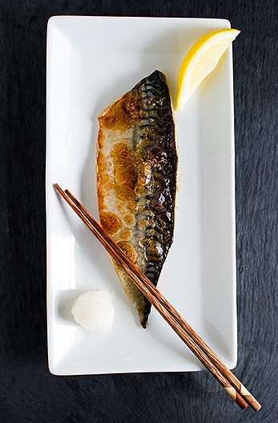

Shaba Shioyaki (Grilled mackerel)
Home

Description
Grilled mackerel, also known as Shaba Shioyaki in Japan, is a popular dish served in Japanese restaurants.
Ingredients
- 2 mackerel fillets
- 2 tablespoons of sake
- 1/2 teaspoon of kosher salt
- 1 inch of daikon radish
- 1 wedge of lemon
- 1 teaspoon of soy sauce
Steps
- Gather all the ingredients. Cut the mackerel fillets in half crosswise.
- Coat 2 mackerel filles with 2 tablespoons of sake.
- Pat dry with paper towels and transfer the fish to a baking sheet lined with parchment paper.
- Sprinkle both sides of the fish with 1/2 tablespoon of kosher salt
- Let the fish sit at room temperature for 20 minutes. During this time, preheat the oven to 425 degrees F.
- After 20 minutes, pat dry the excess moisture on the fish.
- Place the fish skin side down on the parchment paper and bake for 15-20 minutes.
- Grate the 1 inch daikon radish and squeeze out most of the liquid.
- Serve the grilled mackerel on a plate with the grated daikon and 1 lemon wedge on the side. Pour a few drops of soy sauce on the grated daikon.